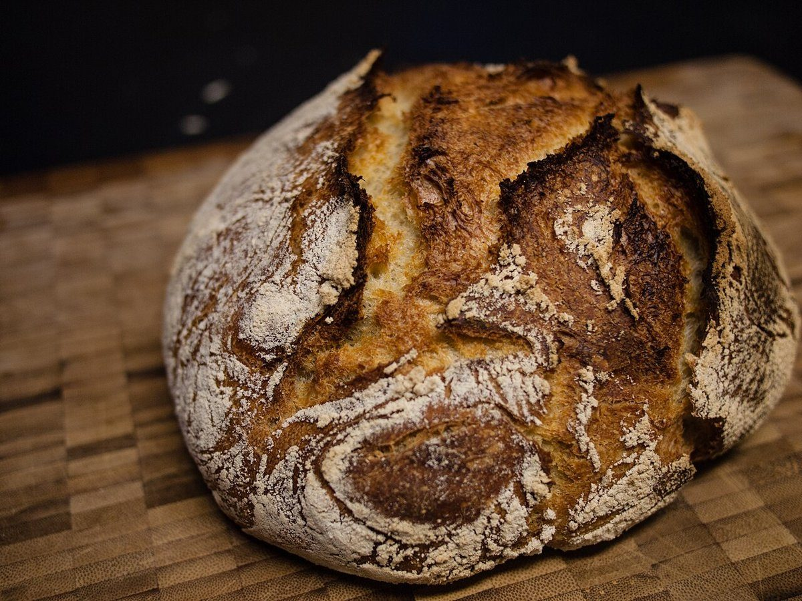

制作側の連想
麺棒を転がす、往復五回。
屋号の響きから、制作側は「転がす」動きを連想しました。パン作りで生地を伸ばすときの、麺棒を前へ転がして戻す動きです。このサイトは、その往復を1往復から5往復まで数えた目盛りを、5ページに対応させた作りです。制作側の連想で、お店の理念・由来とは無関係です。屋号の由来は分かりません。
1往復めの今ページでは、まず確認できていることだけを並べました。
ご案内
確認できていること
| 所在地 | 徳島県小松島市中田町出口５０−１ |
|---|---|
| 電話 | 070-8559-1138 |
| 営業時間 | 準備中 |
| 定休日 | 準備中 |
| ご予約 | 準備中 |
| 駐車場 | 準備中 |
| SNS | Instagram @coropain2023 |
